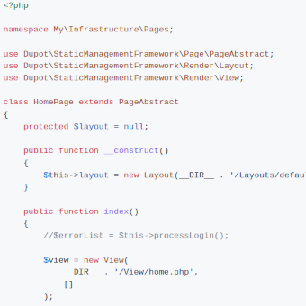

Librairies & co

Librairie opensource
Dupot static-management-framework
Le micro-framework PHP sans dépendance pour ajouter un back-office dynamique à vos sites statiques : routing JSON, pages, vues et sessions.

Les sites statiques sont rapides, sûrs et peu coûteux à héberger. Mais tôt ou tard, il vous faut quelques pages dynamiques pour les gérer : un formulaire de connexion, un éditeur pour vos actualités, un bouton qui régénère le site…
Sortir un framework full-stack pour ça, c'est démesuré. Dupot static-management-framework vous donne exactement ce dont vous avez besoin, et rien de plus.
Points forts
- Léger : une dizaine de petites classes et zéro dépendance, vous pouvez lire tout le code source en 10 minutes
- Routing par regex en JSON : déclarez vos routes dans un unique fichier
routing.json, les groupes capturés sont passés en arguments à vos méthodes - Contrôleurs de page simples : étendez
PageAbstractet recevez automatiquement la requête, la réponse et la configuration - Templates en PHP natif :
LayoutetViewutilisent de simples fichiers PHP - Configuration INI : chargez vos réglages depuis des fichiers
.iniet surchargez-les à l'exécution - Gestion de session : lisez et écrivez GET / POST / SESSION / SERVER via un unique objet
Request - Compagnon de dupot static-generation-framework : générez votre site avec l'un, gérez-le avec l'autre
Installation
composer require dupot/static-management-frameworkPrérequis : PHP 7.2 ou plus, aucune autre dépendance.
Exemple : une route avec paramètre
{
"pattern": "#^/news_edit_([0-9]+)\\.html$#",
"class": "App\\Infrastructure\\Pages\\NewsPage",
"method": "edit"
}public function edit(string $id)
{
// /news_edit_42.html → $id === '42'
}Exemple : protéger vos pages
public function before()
{
if (!$this->getRequest()->getSessionParamOr('isLogged', false)) {
$this->getResponse()->redirect('/login.html');
}
}Publié sous licence LGPL.